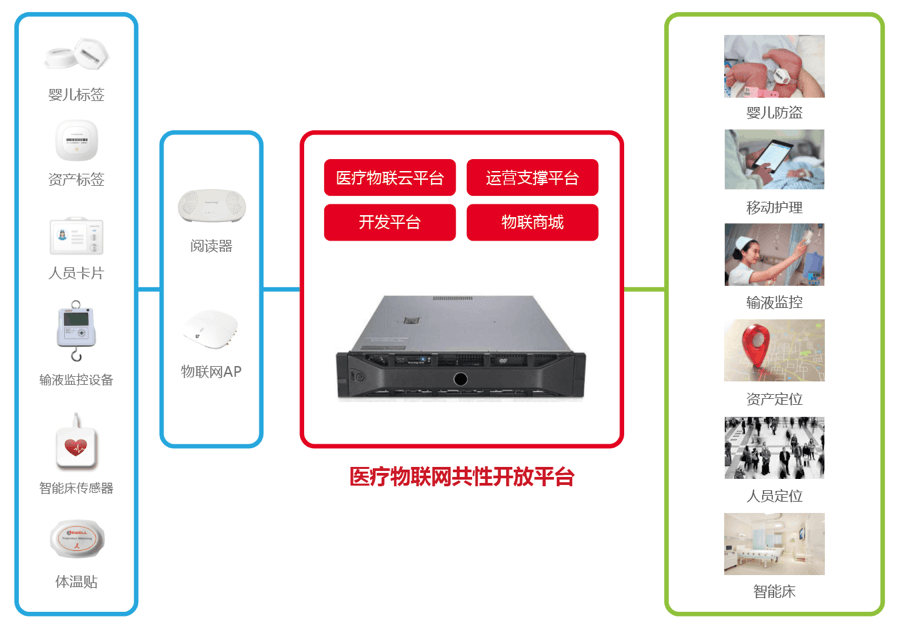

AwareCloud
医疗物联网共性开放平台
专为医疗行业打造的物联网平台
未来的医疗物联网建设应该以“应用”为导向，而非以“技术”为核心。基础网络平台、“共性开放平台+应用子集”建设将成为未来医疗物联网建设的方向。而共性开放平台将成为助力医疗物联网行业发展的动力和增长点。
AwareCloud医疗物联网共性开放平台是以“数据”为中心，实现医院所有的物联网感知数据在平台上的统一采集、处理、存储与分发，从而实现全院物联网数据的交互与共享。同时，平台对全院物联网设备与应用的统一监控与管理，实现设备与应用的“可管可控”，提升运维效率。
平台打破了原先物联网业务信息孤岛的瓶颈，全面优化和整合医院内部物联网的数据资源，接入更多优质的业务应用，为患者提供更健康、更人性、更安全的服务，为医护人员减轻工作量，提高工作效率，从而进一步改善医患关系。
平台提供开放的硬件接入协议，允许符合协议的智能硬件设备接入平台，同时提供了标准的应用API接口，让应用开发变得更简单、更快捷。
平台架构
医疗物联云平台
为平台的核心能力平台；负责设备与应用的接入认证；负责终端设备数据的统一接收、分析、存储与分发；实现平台消息事件、路由规则等基础功能
产品优势
标准协议：
支持MQTT标准物联网协议，保证传输大规模数据消息
安全可靠：
提供基于设备级和应用级的接入认证，并且基于授权，控制应用对设备的读写等权限控制
弹性扩展：
基于docker技术，可根据实际需求进行弹性扩展
标准API：
提供开放标准的API，方便第三方应用快速接入到平台
开发平台
提供设备、应用接入厂商注册服务；提供接入产品功能与数据的在线配置服务；提供设备与应用在线调试测试服务；提供在线支持与帮助服务等
产品优势
方便快捷：提供在线开发调试平台供开发者使用
完善工具：平台提供各种工具简化接入门槛，如设备功能功能建模工具
运营支撑平台
作为平台运营与运维的统一门户；实现对平台、终端和应用的状态实时监控；负责平台、终端与应用的管理与配置；提供平台运行的各类分析报表
产品优势
实时监测：
对设备的状态和数据进行连续不断监测，当设备状态发生变更时及时更新状态
可视化界面：
提供各种线图、表盘和表格等图标类型，满足各类数据展现和配置需要，降低操作人员门槛
物联商城
提供平台上支持的设备与应用的列表；接入平台设备技术参数的介绍；提供接入平台应用的功能简介